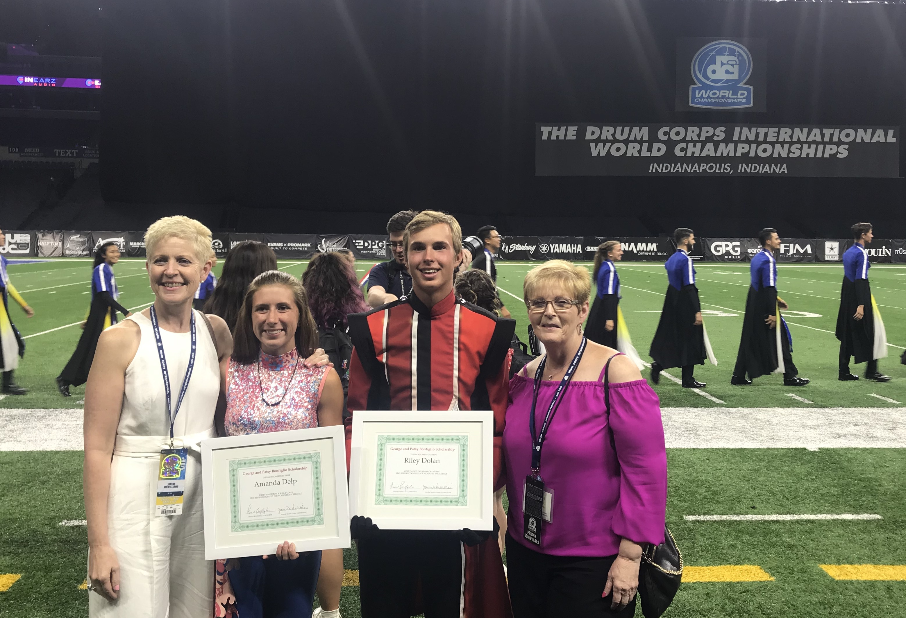
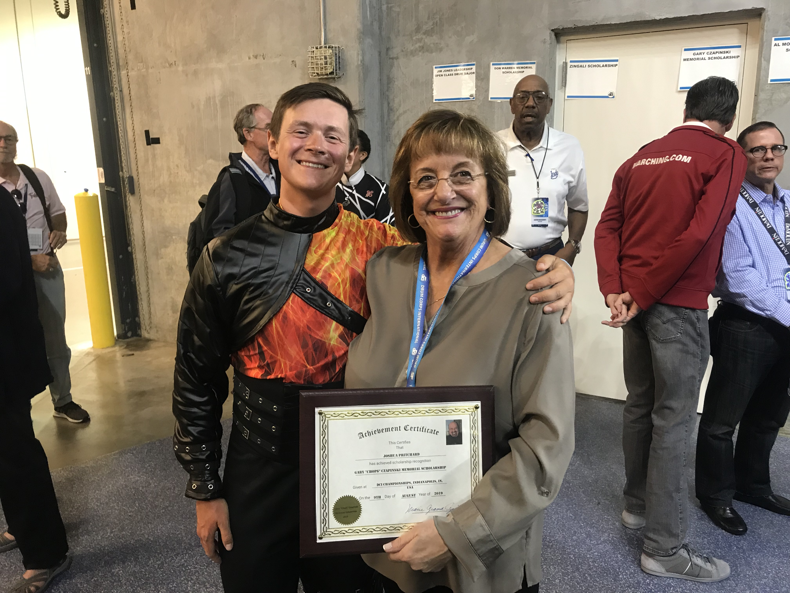

August 20, 2019
At the 2019 Drum Corps International World Championships, members from the Colts and Colt Cadets were recognized with scholarships for their contributions to DCI and the marching arts activity. They were part of a scholarship and awards ceremony that distributed more than $24,000 in scholarships to drum corps performers. You can read more about all the scholarships awarded here.
Riley Dolan from the Colt Cadets was awarded the George and Patsy Bonfiglio Scholarship. The Bonfiglio Foundation is a nonprofit organization founded by the Bonfiglio Family honoring their parents, George and Patsy. The Bonfiglio family has a long history in the drum corps activity, with George being the founder of the 27th Lancers and DCI's first board of directors chairman. The annual scholarship is presented to individuals who are pursuing careers in education or the performing arts. Riley Dolan is from Lisbon, Iowa, and is currently a senior at Lisbon Community High School. He has been a member of the Colt Cadets since 2017, playing in both the trumpet and mellophone sections.
Joshua Pritchard from the Colts was awarded the Gary “Chops” Czapinski Memorial Scholarship. Gary Czapinski was a longtime visual judge and drum corps instructor since the earliest years of DCI. The annual scholarship is presented to individuals who intend to teach drum corps, winter guard, or marching band. Joshua Pritchard is from Stafford, England, and is currently studying computer science at University Of Huddersfield in West Yorkshire. He was a member of the Colts in 2018, and aged out as snare section leader in 2019. Prior to becoming a member of the Colts, Josh performed with the Stafford Lancers and the Kidsgrove Scouts.
Return to Colts News.